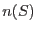
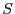
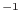
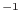
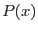
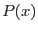

This function may be performed alone by calling the script with entrystage and finalstage=`makesimlist'.
The tasks srclistsim and newcolgen are called within this section. The first of these performs the bulk of the work of the section, which is to generate a list of random source positions and fluxes. The description of the probability distributions these sources are to follow is given in the template set pointed to by parameter srcspecset. This template file is a FITS dataset. Its structure is described in section 7: I'd advise you to print this section out and have it beside you to refer to as you read the remainder of the present section (4.3.1).
The explanation for the tables, keywords and columns in the template set is as follows. Table SRCSPECS contains information about the probability distributions of the source positions and fluxes; table FLUX_SCALES contains information about the source spectrum. (The template set contains other tables which are used in other parts of eimsim.)
The spatial locations of the sources are distributed evenly on the celestial sphere, but are restricted to a cone delimited by the CONE_RA, CONE_DEC and CONE_RAD keywords. The number density function  of source fluxes  is a piecewise power law
The FLUX_SCALES table records information relating to the source spectrum. At present, all the simulated sources are assigned the same spectrum. (This is not very realistic, and may be changed in future.) The spectrum is an absorbed power law, the photon spectral index being given by keyword SPECINDX and the HI column density by keyword HI. The keyword FLUX gives the total flux, within the band defined via the keywords E_MIN and E_MAX, from a source of such spectrum, in the case that the source flux density per unit energy is equal to 1 erg cm s keV at 1 keV. The flux values of the simulated sources are given for this same band.
s keV at 1 keV. The flux values of the simulated sources are given for this same band.
The eimsim
package makes images in  energy bands. Exactly which bands are used is defined by the occurrence of the respective exposure-map templates (see section 7). In other words, if exposure maps are found only for bands 1, 2 and 4, then these are the only bands for which images will be made within eimsim. The FLUX_SCALES table must have a row for each of these bands. It may have additional rows for other bands, but these will be ignored by eimsim.
energy bands. Exactly which bands are used is defined by the occurrence of the respective exposure-map templates (see section 7). In other words, if exposure maps are found only for bands 1, 2 and 4, then these are the only bands for which images will be made within eimsim. The FLUX_SCALES table must have a row for each of these bands. It may have additional rows for other bands, but these will be ignored by eimsim.
The first column of the FLUX_SCALES table records the ID integer of each tabulated energy band. Columns E_LO and E_HI define the band edges. Column FLUX records the flux in this band from a source of the spectrum defined by the keywords mentioned just above. Thus the flux of any simulated source in any of the  bands may be calculated by dividing the source flux by the keyword FLUX above, then multiplying by the appropriate value of the column FLUX.
bands may be calculated by dividing the source flux by the keyword FLUX above, then multiplying by the appropriate value of the column FLUX.
The remaining columns of table FLUX_SCALES record the `Energy Conversion Factors' or ECFs for each EPIC instrument and for four filters. These ECFs are used to convert fluxes to count rates  as follows:
as follows:
The output of the `makesimlist' function of eimsim is a FITS dataset containing a binary table extension SRCLIST which has the following columns:
|
|
Data type | Units |
| INDEX | 4-byte int | |
| FLUX | 4-byte real | erg cm |
| RA | 8-byte real | deg |
| DEC | 8-byte real | deg |
| FLUXRAND | 4-byte real | |
| STREAM_N | 4-byte int | |
| FIELD_N | 4-byte int |
Column INDEX is initially the same as the row number (starting at 1), but the INDEX value obviously follows the source if the list is filtered or sorted in any way. It offers therefore an unambiguous way to identify each source.
The FLUX value is the flux of the source within the band defined by the E_MIN and E_MAX keywords of table FLUX_SCALES in the template set, as described above.
Columns RA and DEC don't require any explanation.
The explanation of the FLUXRAND value is as follows. One well-known technique for generating random values of a coordinate  which have a probability distribution  is to integrate
which have a probability distribution  is to integrate  then invert the result. That is, the random
then invert the result. That is, the random  values are generated from the formula
values are generated from the formula
Columns STREAM_N and FIELD_N are fully described in the eimsimbatch documentation, but briefly speaking, STREAM_N is created to allow eimsim to be run in parallel in different streams; whereas FIELD_N records the sequence number in the iteration performed by eimsimbatch.
A copy of the template table SRCSPECS is also appended to the source list.